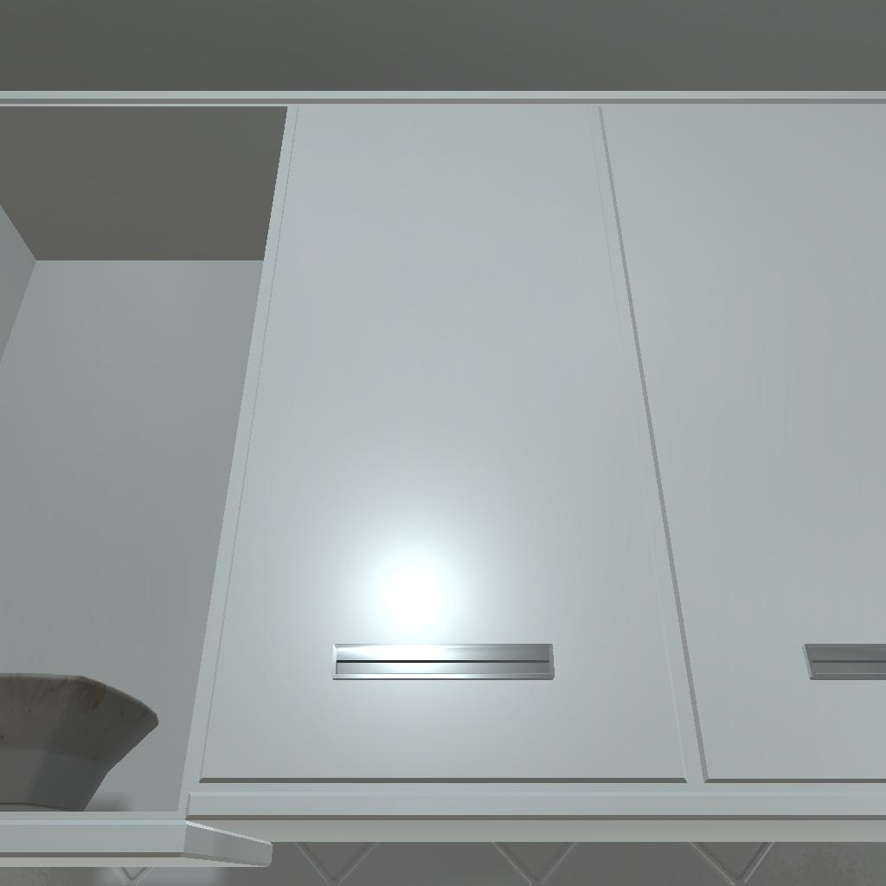

---------------------------------------------------------task: 12---------------------------------------------------------
--------------------------------------------------------------------------------------------------------------------------------------------------------------------
--------------------------------------------------------------------------------------------------------------------------------------------------------------------
Step:--------------------------------------------------------------------------8-------------------------------------------------------------------------------
----------------------------------------
VLM Prompt:
Image1:
Image2:
Image3:
**Instruction**
1. Analyze the provided images to identify all visible household objects and compare the difference between images (e.h. whether the object is opened or not and taken on hand or not), focusing on those relevant to the task description "clean some tomato and put it in countertop."
2. Use the analysis of images and the task hint "The agent must find an object of the desired type, pick it up, go to a sink or a basin, clean the object with a sink or basin, and then find the correct location to place it and put it down there. The agent does not need to use soap bottle or faucet to clean the object, and the agent just needs to do action that is "clean the object with the sink or sink basin"." to answer the question: what is the most reasonable action in the choices for the task description "clean some tomato and put it in countertop"?
3. Decide and write the answer using the template: The answer is: (i): , where i is the real number. If there is no desired object in images, search every place based on **Initial Observation** to find the object. And if no one is exactly correct, choose a similar answer.
**Initial Observation**
You are in the middle of a room. Looking quickly around you, you can see cabinet (1-6), microwave (1), countertop (1-2), coffeemachine (1), toaster (1), sink (1), sinkbasin (1), fridge (1)
**Answer Choices**
(1): go to cabinet 3
(2): go to microwave 1
(3): go to cabinet 4
(4): go to cabinet 5
(5): go to cabinet 6
(6): go to countertop 1
(7): go to coffeemachine 1
(8): go to toaster 1
(9): go to countertop 2
(10): go to sink 1
(11): go to sinkbasin 1
(12): go to fridge 1
(13): open cabinet 1
(14): close cabinet 1
(15): examine cabinet 1
**Answer**
Let's think step by step by following the instructions.
----------------------------------------
----------------------------------------
Original Response:
First, we analyze the images provided:
Image 1: We see a closed cabinet with a handle, no objects are visible, and nothing is in hand.
Image 2: The same closed cabinet is visible with a handle, no objects are visible, and nothing is in hand.
Image 3: This is the same as Image 2, with no changes in the visible objects or their state.
Comparing the images, there is no difference between them. No objects are visible that are relevant to the task description "clean some tomato and put it in the countertop."
Based on the task hint, we must find a tomato, clean it, and then place it on the countertop.
Now, let's decide the most reasonable action:
- Tomatoes are usually stored in the fridge or cabinets, not in microwaves, coffeemachines, toasters, or sinks.
- The agent does not need to use the sink or sinkbasin yet, as the tomato has not been found.
- The countertop is the final location to place the tomato after cleaning, not the initial step to find the tomato.
Considering the Initial Observation, we know there are multiple cabinets, a fridge, and a countertop. Since cabinets and the fridge are common storage places for tomatoes, the most reasonable actions would be to go to the fridge or one of the cabinets to find a tomato.
The answer is: (12): go to fridge 1. If the tomato is not there, the next step would be to check the cabinets, starting with those that are typically used to store food items.
----------------------------------------
----------------------------------------
>>> Refine Original VLM Response and Get Pure Action: go to fridge 1
----------------------------------------
-----------------------------------------------------------------
Running time: 12.028576135635376 seconds
Total Money: 6.5193200000000076
-----------------------------------------------------------------
-----------------------------------------------------------------
Text Observation:You arrive at loc 13. The fridge 1 is open. On the fridge 1, you see a apple 1, and a potato 1.
-----------------------------------------------------------------
UNSUCCEED